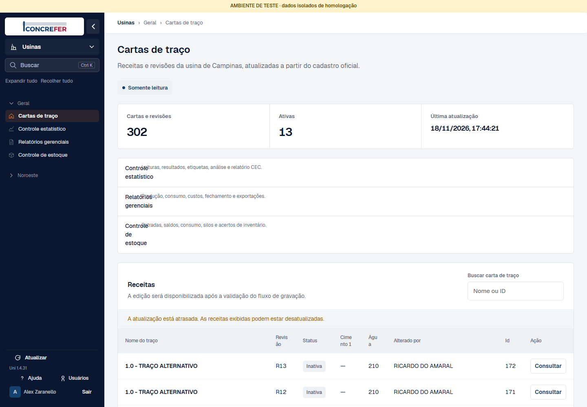
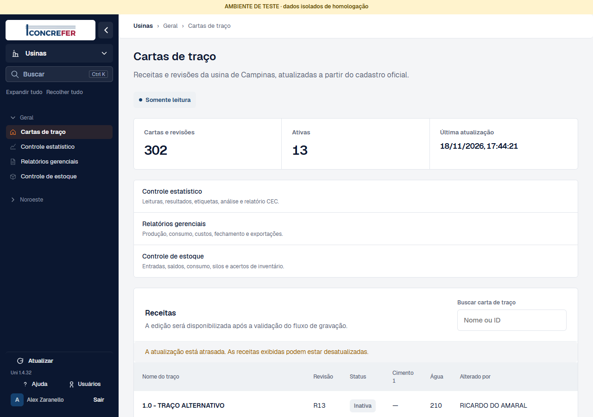
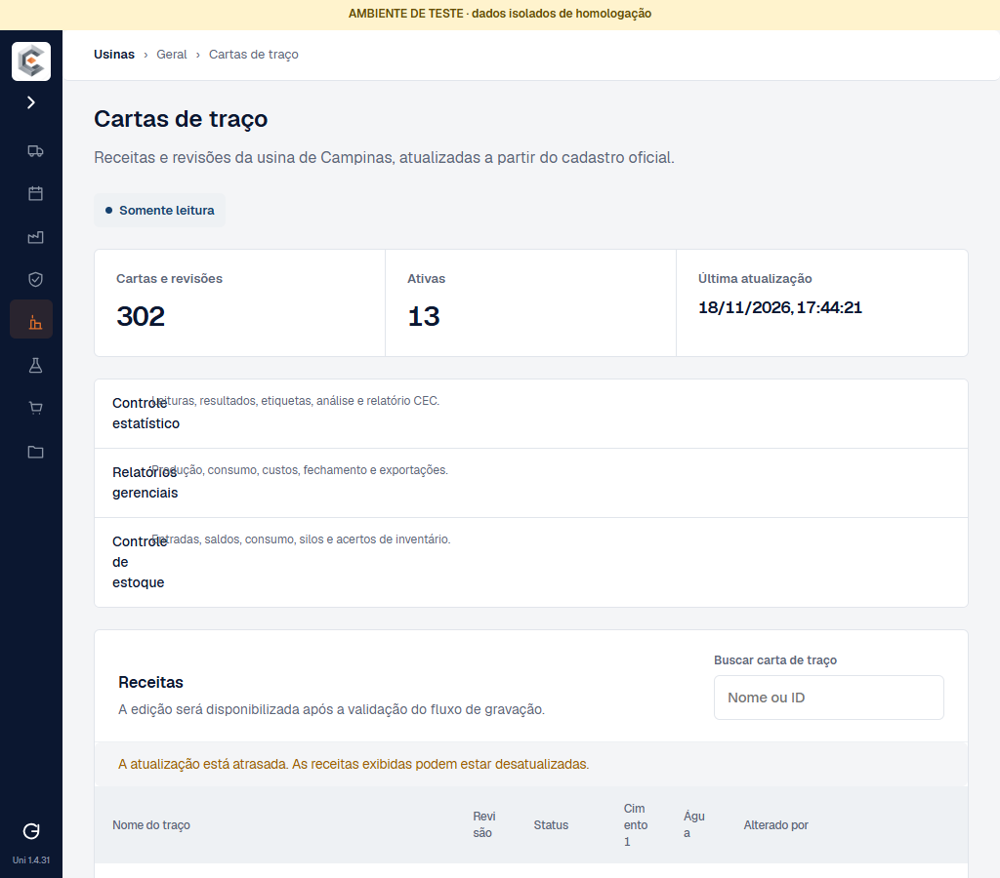
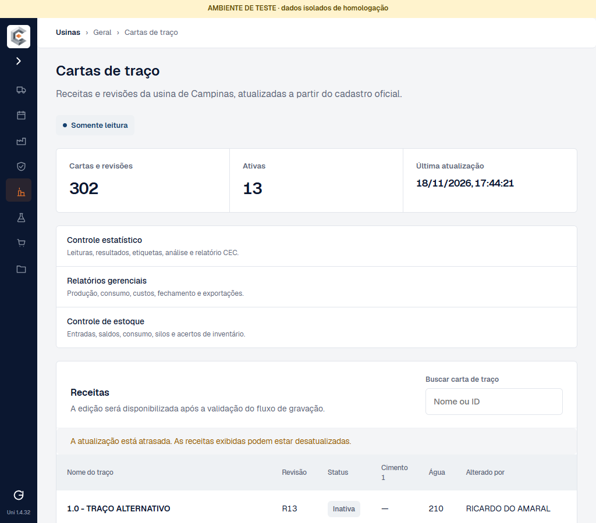
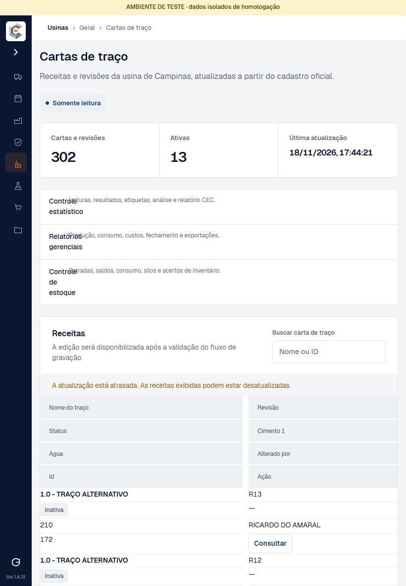
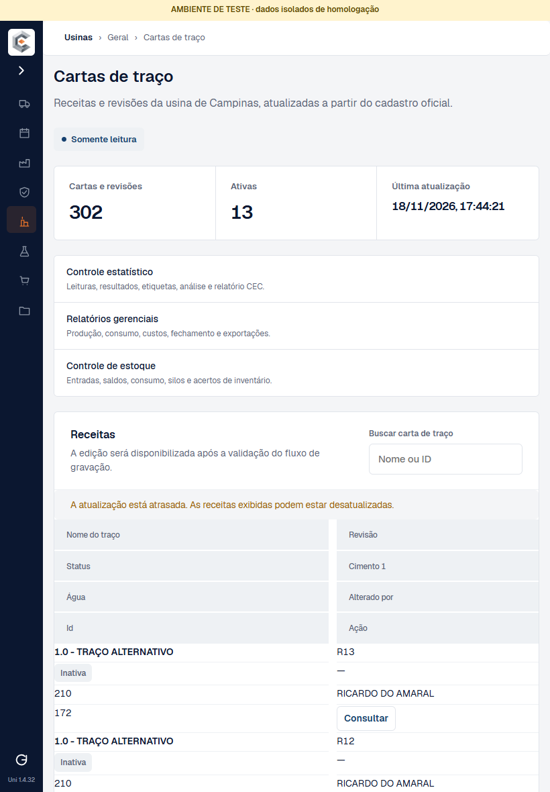
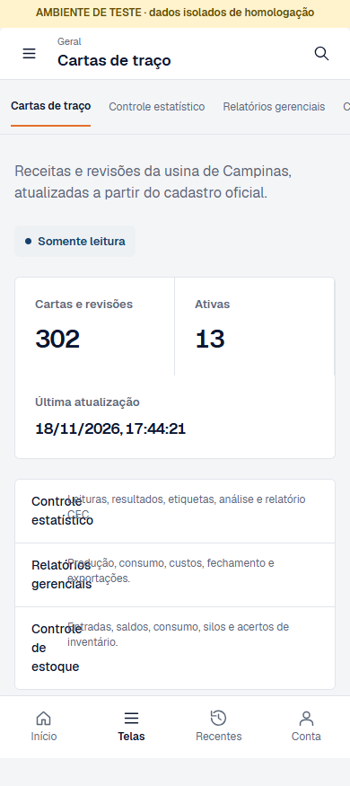
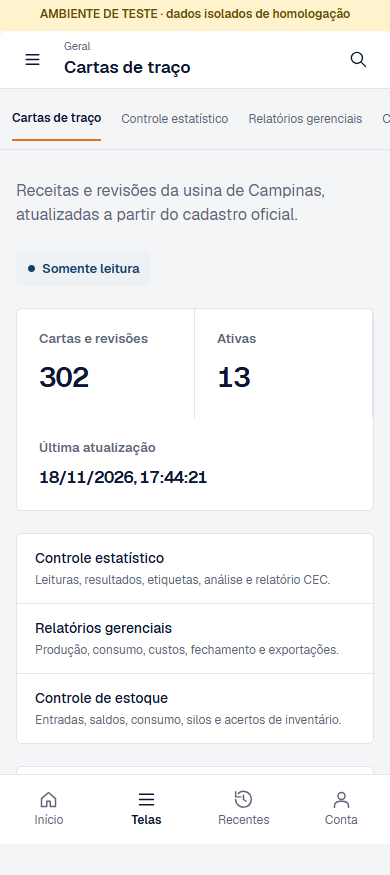

Sobreposição dos links e quebra de palavras dos cabeçalhos corrigidas na 18446. Gate 7/7 e nove perfis aprovados. Produção permanece na 1.4.31, sem alteração.
A lista herdava uma grade com coluna de ícone de 28 px. Nos links sem ícone, o texto ultrapassava essa coluna e invadia a descrição. A lista agora empilha título de 14 px/500 e descrição cinza, com separadores finos e linha de pelo menos 44 px.
A regra compartilhada de cabeçalhos permitia quebrar palavras em qualquer caractere. Os componentes nativos passam a usar overflow-wrap:normal, word-break:normal e dimensionamento automático da tabela. Quando necessário, a rolagem fica no contêiner da tabela. Noroeste renderiza diretamente no shell e recebe uma regra própria, restrita a .noro-table-wrap; as outras telas do shell mantêm seus estilos.
As duas folhas novas usam media=screen e @media screen. Os 47 templates existentes e seus espelhos de compilação recebem a referência ao estilo; o service worker da 1.4.32 inclui as duas folhas no cache. Nenhuma rota, chamada de API, permissão, banco ou serviço foi alterado pela correção. O aviso de sincronização atrasada de receitas já aparece na linha de base e foi preservado.
| Prova | Resultado |
|---|---|
| Entrada de Usinas | Cinco larguras: 1440, 1280, 1024, 820 e 390; nenhuma sobreposição, palavra de cabeçalho quebrada ou rolagem da página |
| Varredura nativa | 49 opções de menu × 5 larguras = 245 casos; zero defeitos de geometria após a correção |
| Noroeste | Oito caminhos repetidos após a regra do shell; CEC e Estoque também conferidos em navegação natural, em dez casos |
| Perfis | 9 perfis antes/depois, mesmas 12 telas para GERENCIA e ADMIN; demais perfis continuam sem Usinas |
| Gate | 7/7 |
| Publicação | 54 arquivos, 350 hashes conferidos, incluindo busca e páginas de módulo preservadas |
| Produção | 1162 arquivos iguais; Nginx, unidades, pools e seis esquemas iguais; versão 1.4.31 |
| Conexões | Pico 70 atividades na varredura; uma tela por vez e parada configurada acima de 80 |
| Banco / serviços | 0 migrações, 0 concessões, 0 reinícios e 0 alterações de produção |
O teste usa caixas reais do texto (Range), incluindo o trecho que ultrapassava a caixa do elemento, e detecta uma palavra renderizada em mais de uma linha nos cabeçalhos. A linha de base falha: sobreposição nas cinco larguras e cabeçalhos quebrados em três larguras da entrada. Na varredura, o problema também apareceu no histórico de ensaios, etiquetas e relatório CEC, catálogo de Cronoanálise e CEC/Estoque de Noroeste.
A varredura percorre URLs reais em iframe autenticado e mede os componentes em cinco larguras úteis. As capturas da entrada e a prova adicional de Noroeste usam a navegação natural do shell. As larguras são emuladas no navegador do computador. Os testes leem dados existentes; não há lançamento de teste.
Geometria antes · Geometria depois · Varredura antes · 245 casos finais · Noroeste em navegação natural · Matriz dos perfis · Gate · Auditoria de produção








CEC 1440 px · CEC 1280 px · CEC 1024 px · CEC 820 px · CEC 390 px · ESTOQUE 1440 px · ESTOQUE 1280 px · ESTOQUE 1024 px · ESTOQUE 820 px · ESTOQUE 390 px
| Origem | Perfil | Usuário existente | Telas autorizadas | Entrada nativa |
|---|---|---|---|---|
| central | MONTADOR | alexh | 0 | Acesso restrito |
| central | GESTOR | josue | 0 | Acesso restrito |
| central | GERENCIA | alex | 12 | Abriu |
| central | APONTADOR | setor1 | 0 | Acesso restrito |
| central | CONVIDADO | e2e-suprimentos-almox | 0 | Acesso restrito |
| PCP | ADMIN | Ricardo | 12 | Abriu |
| PCP | PCP | Diego | 0 | Acesso restrito |
| PCP | PRODUCAO | producao | 0 | Acesso restrito |
| PCP | CONSULTA | e2e-pcp-quality-link-probe | 0 | Acesso restrito |
| Arquivo nativo | Usa o estilo compartilhado | Tabelas estáticas | Classes de lista |
|---|---|---|---|
| public/usinas/carta-traco.html | Sim | 1 | legacy-card |
| public/usinas/fechamento-diario.html | Sim | 0 | |
| public/usinas/fechamento.html | Sim | 2 | |
| public/usinas/index.html | Sim | 1 | legacy-card |
| public/usinas/noroeste/index.html | Sim | 0 | |
| public/usinas/relatorios/cartas-traco/index.html | Sim | 2 | |
| public/usinas/relatorios/consumo/index.html | Sim | 4 | |
| public/usinas/relatorios/custos/carta-slide/index.html | Sim | 1 | |
| public/usinas/relatorios/custos/comparar/index.html | Sim | 1 | |
| public/usinas/relatorios/custos/index.html | Sim | 3 | |
| public/usinas/relatorios/exportar/index.html | Sim | 1 | |
| public/usinas/relatorios/fechamento/index.html | Sim | 2 | |
| public/usinas/relatorios/fechamento-diario/index.html | Sim | 5 | |
| public/usinas/relatorios/index.html | Sim | 0 | |
| public/usinas/relatorios/iqt/index.html | Sim | 1 | |
| public/usinas/relatorios/producao-periodo/index.html | Sim | 2 | |
| public/usinas/relatorios/reports-diarios/index.html | Sim | 0 | |
| services/laboratorio/server/static/cec/analise/index.html | Sim | 0 | |
| services/laboratorio/server/static/cec/analise/relatorio.html | Sim | 3 | |
| services/laboratorio/server/static/cec/analise/resultado-cp.html | Sim | 1 | |
| services/laboratorio/server/static/cec/etiquetas/index.html | Sim | 1 | |
| services/laboratorio/server/static/cec/index.html | Sim | 0 | |
| services/laboratorio/server/static/cec/leitura/index.html | Sim | 0 | |
| services/laboratorio/server/static/cec/relatorio/index.html | Sim | 0 | |
| services/laboratorio/server/static/cec/resultados/index.html | Sim | 1 | |
| services/laboratorio/server/static/cec/rompimentos-mes/index.html | Sim | 1 | |
| services/laboratorio/server/static/cronoanalise/cronoanalise.html | Sim | 0 | |
| services/laboratorio/server/static/cronoanalise/metodologia-conteudo.html | Não | 1 | |
| services/laboratorio/server/static/index.html | Sim | 1 | |
| services/laboratorio/server/static/noroeste/cec/analise/index.html | Sim | 0 | |
| services/laboratorio/server/static/noroeste/cec/analise/relatorio.html | Sim | 3 | |
| services/laboratorio/server/static/noroeste/cec/analise/resultado-cp.html | Sim | 1 | |
| services/laboratorio/server/static/noroeste/cec/etiquetas/index.html | Sim | 1 | |
| services/laboratorio/server/static/noroeste/cec/index.html | Sim | 0 | |
| services/laboratorio/server/static/noroeste/cec/leitura/index.html | Sim | 0 | |
| services/laboratorio/server/static/noroeste/cec/relatorio/index.html | Sim | 0 | |
| services/laboratorio/server/static/noroeste/cec/resultados/index.html | Sim | 1 | |
| services/laboratorio/server/static/noroeste/cec/rompimentos-mes/index.html | Sim | 1 | |
| services/laboratorio/server/static/noroeste/usuarios/index.html | Sim | 0 | |
| services/laboratorio/server/static/novo/index.html | Sim | 1 | |
| services/laboratorio/server/static/novo/postes/absorcao.html | Sim | 0 | |
| services/laboratorio/server/static/novo/postes/metodologia-conteudo.html | Não | 1 | |
| services/laboratorio/server/static/novo/postes/novo.html | Sim | 0 | |
| services/laboratorio/server/static/postes/index.html | Sim | 0 | |
| services/laboratorio/server/static/postes/metodologia-conteudo.html | Não | 1 | |
| services/laboratorio/server/static/slump/flow.html | Sim | 1 | |
| services/laboratorio/server/static/slump/index.html | Sim | 0 | |
| services/laboratorio/server/static/slump/umidade.html | Sim | 1 | |
| services/laboratorio/server/static/usinas-relatorios/index.html | Sim | 0 | |
| services/carta-static/index.html | Sim | 2 | ct-home-card |
| services/carta-static/manual/manual-carta-traco.html | Não | 8 | |
| services/dosagem-static/direct-entry.html | Não | 0 |
Os templates sem esse estilo são páginas de metodologia, manual e entrada direta, sem o componente afetado. Dosagem foi conferida em duas opções de tabela e não apresentou o defeito. O CQ usa folhas próprias e não faz parte dos templates que carregam esse estilo. Os componentes renderizados por JavaScript foram conferidos nas opções de menu, além do inventário estático.
Backup privado da 1.4.31: /opt/concrefer-unificado/homolog-next/backups/usinas-sobreposicao-1.4.32-1795207185. O complemento de Noroeste preservou os arquivos originais desse backup. A reversão restaura os arquivos anteriores e retira as duas folhas novas, exclusivamente na homologação:
python3 /opt/concrefer-unificado/homolog-next/backups/usinas-sobreposicao-1.4.32-1795207185/rollback.py rollback
Pacote exclusivamente de homologação, com faixa de teste preservada: release.tgz. SHA-256: a8bf54b00c067aec4fec1ab02e431aae9f2cff76a2ef1ee6a9be0f0e36f86503.
Manifesto · Registro da publicação · Conferência dos hashes · Resultado estruturado
Commit próprio registrado em commit.json. Sem push, sem PR e sem publicação em produção. Trabalho encerrado.